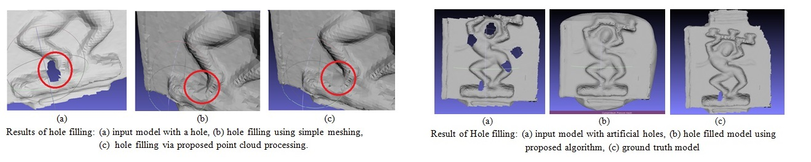
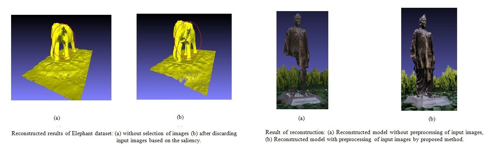
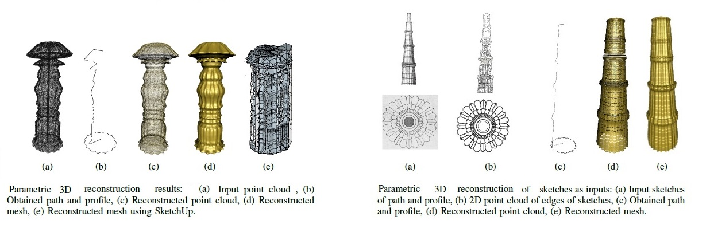
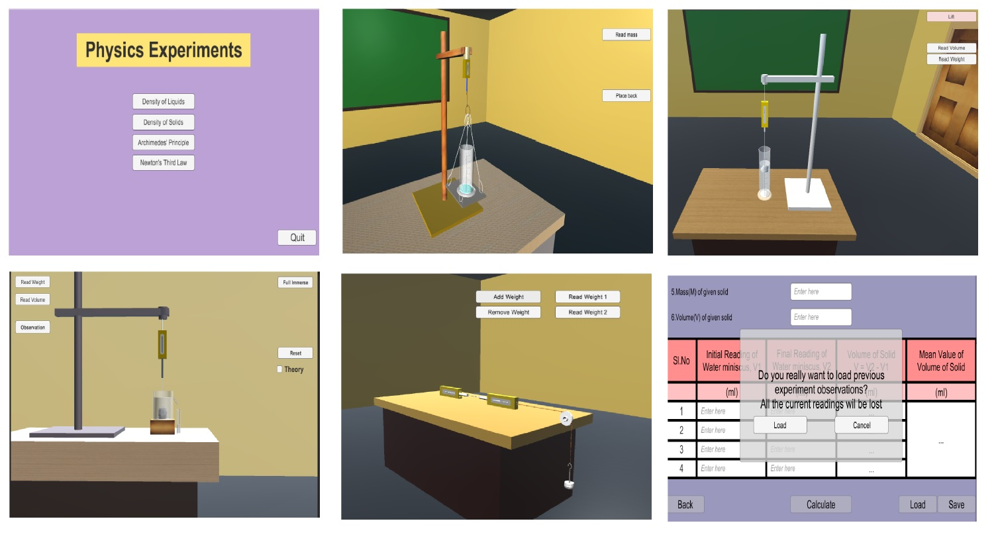
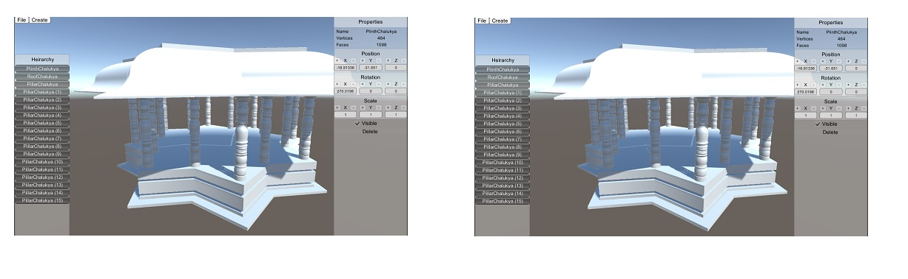
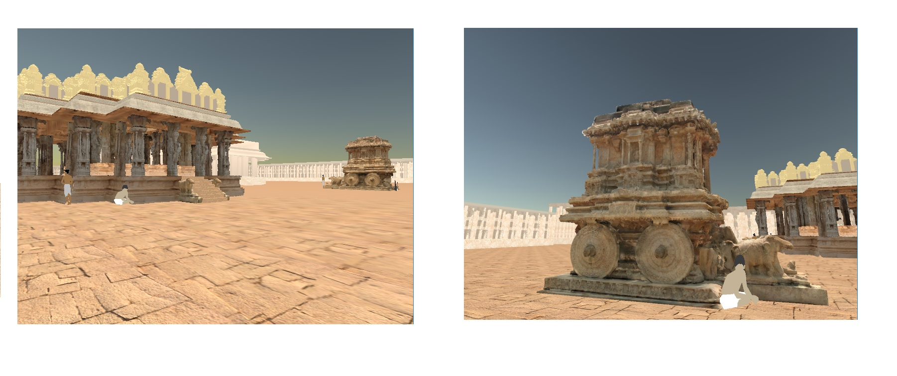

Software Developer
August 2018 – December 2018
INDrone Aero Systems, Gokul Road, Hubballi, India
Developed Computer Vision and Image Processing based software solutions and led group of interns.

Often 3D reconstructed models will have holes. So we filled those holes by our unique approach. We can observe the hole filled results.
We tried improving the quality of 3D Reconstruction by selecting the images based on the saliency and pre processing the images before providing it to the 3D reconstruction pipeline.
Identifying the symmetric parameters know as path (a horizontal part) and profile (a vertical part) and reconstructing back the 3D model with those identified parameters and compared our results with the results obtained using Sketch up as shown in the figure (left-side). We even tried reconstructing the symmetric structures from sketches as shown in the figure (right-side).
We have created an application which provides virtual environment to perform physics experiments using computer graphics. Glimpse of the application developed are as shown in the figure.
A softwre developed for creation and modification of architectural structures which are constrained by certain architectural rules of perticular style of architecture or architectural rules of certin time period. This software is developed based on concepts of computer graphics.
We have created a virtual 3D world of a UNISCO world heritage site “Hampi”, in order to protect the heritage site digitally as shown in the figures and created gesture based walk through using Kinect as shown in the video.
August 2018 – December 2018
INDrone Aero Systems, Gokul Road, Hubballi, India
Developed Computer Vision and Image Processing based software solutions and led group of interns.
July 2017 – June 2018
KLE Technological University (Earlier known as BVBCET), Hubballi, India
Worked on Automated Drone Based Data capture and 3D Reconstruction, a sponsored project by Samsung R&D Institute, India-Bangalore (SRI-B). This project involved capturing of input images of large statue using Drone autonomously, multi view 3D reconstruction pipelines, and finding better approaches of meshing and texture mapping of 3D reconstructed model.
December 2015 – March 2016
Snaptrude Technologies Private Limited, Bangalore-560004, India
Worked on 3D rendering and scripting for the 3D web application using WebGL, HTML, CSS and JavaScript.
June 2015 – July 2015
Indian Institute of Technology (IIT), Delhi-110016, India
Learned basics of Computer Graphics, Unity 3D and Kinect and implemented a software system to capture the user movement using Kinect and controlled the camera and/or scene based on the input received by the Kinect sensor.